Java стало быть script. Язык, никак не связанный с Java. На момент прохождения материала принят стандарт ЕкмаСкрипт 6.
База конспектов.Тест страница.
Оглавление.
- 1 Что это.
- 2 Типы.
- 3 Ввод.
- 4 Просиые вещи.
- 5 Функции.
- 6 Объекты.
- 7 Строки.
- 8 Массивы.
- 9 Асинхронка.
- 10 DOM.
- 11 Вопросы.
- 12 Повышенный уровень.
- 13 Классы.
- 14 Прокси.
- 15 Серверное.
- 16
- Вниз
Как куда зачем.
Располагается в разделе head или перед закрывающим тегом body. Разница есть, вероятно, на что должен будет влиять скрипт. При расположении выше могут возникнуть трудности с элементами ниже тега.
<script>
</script>
Всё, что стоит между этими тегами, считается скриптом, и работает уже в своих правилах.
<script src="">
</script>
Атрибут адрес, относительный или абсолютный. Код в файле будет работать обычным способом. Для простой проверки можно использовать функцию alert('text');
Читать документацию можно по запросу mdn (Mozilla Developer Network), проверять можно сразу из консоли браузера и смотреть там состав базовых объектов, можно найти удобное IDE с подсказками.
JetBrains WebStorm — интегрированная среда разработки на JavaScript, CSS & HTML от компании JetBrains, разработанная на основе платформы IntelliJ IDEA. Лицензия платная.
VSCode редактор для джаваскрипта.
Пингер какой-то или типа того?
Глава 2. Типы данных, операции.
Тут очень похоже на всё, что было ранее. Есть ещё уточнения по стандартам.
Последняя екма6, переменные создаются через let a = 5; const b = 10;
Предыдущая екма делала так - var a = 5; Сейчас, судя по всему, такие переменные являются указателями на объект, и это сбивает с ожидаемого функционала.
Тип на данном этапе не указывал, можно задать строку через одинарные кавычки. Хотя можно двойные. Проверку сделать через консоль. Команда console.log(name1); производит вывод значения переменной. Консоль в браузере открывается средствами разработчика, встроенный инструмент. Ещё есть console.log(typeof name1); и она выводит тип значения. Судя по всему, знак точка с запятой не является обязательным. Конкотэнация происходит автоматически, неявное преобразование хорошо взаимодействует с разными типами данных. Кроме того, разрешается переопределять тип переменных последующими присваиваниями.
Имена переменных могут быть из одного символа, но не могут начинаться с цифры.
null undefined boolean number string object symbol
Примитивы null undefined boolean number string symbol. Не примитивы object. Переменные примитивов отдельны, переменные не примитивов принимают ссылку на объект. Поэтому заданные через const примитивы менять нельзя, а сложные объекты вполне получается. Например массив, хотя это не совсем тип.
Типов пока пять, примитивов. Или не пять. Логика строка число, для неинициализированных ещё андифайнед, и нулл. Отмечается глюк жс в том, что тайпоф выводит нулл как тип обжект, его можно вывести без тайпофа. Ещё будут типы, три или около того.
Массивы. const array1 = ['123','234','345']. Есть другой, устаревший способ через new Array(). Обращение к элементам массива array1[x]. Метод array1.length даёт длину, то бишь сколько элементов в массиве. Несмотря на констант, элементы можно менять. Также можно расширять массив, добавляя индексы со значениями. Забавная схема, array1[array1.length] = '456' обращается к номеру, следующему за последним присутствующим, раширяя на единицу.
BigInt позволяет работать с числами, превышающими max_safe_integer. Фишка этой константы в том, что выше неё данные хранятся нестабильно, возможно переполнение, и тип бигинт предназначен для валидных операций с такими числами. Он исключает возможность операций с другими типами без использования пребразования, 5n + 5 == error. Обозначается бигинт буквой n после числа. Преобразование туда - BigInt(5), обратно, например в интежер - parseInt(5n).
Некоторые типы данных представлены глобальными сущностями, вроде String, Number, Array, etc. К ним можно обращаться через консоль, и через точку наблюдать некоторые содержащиеся там фишки.
Фолси вельюс - условно ложное значение. '' 0 null NaN undefined false. Пустые массивы объекты функции определяются как истина, хотя я не думаю, что есть основание это использовать. Проверка через вызов Boolean(value).
Некоторые операции для строк не применимы, поэтому происходит неявное преобразование к числу. '10' - 5 = 5. '2' * '2' = 4. Работает только с корректным числовым контентом строки, иначе будет NaN. undefined не делает преобразования.
Нестандартное (x ** 2) возводит х в квадрат. Также x += 2 редко использую.
Приоритеты операций стандартны.
Логические операции стандартны. За исключением равенства, == может совершить преобразование, === сравнивает с учётом разницы типов.
Глава 3. Ввод вывод.
Функция prompt('некий меседж') возвратит введённое юзером значение. Можно сразу назначить её инициализацией переменной или константы.
console.log() выводит данные в консоль браузера.
console.dir() выводит как бы иначе, более технично.
console.group(`some title`) console.groupEnd() между этими методами консоли выводы будут более сгруппированы визуально.
error метод консоли. Ещё там наверняка их много.
Глава 4. Простые конструкции.
if ( x === 1 ) {} условный оператор. Три знака равно. Два знака могут выполнить неявное преобразование, в итоге не дав правильного ответа. Например 123 == "123" будет истиной. Три знака проверяют даже на соответствие типов, не допуская преобразования. Ещё рекомендуется производить каскад иф-елсе-иф-елсе, чтобы снимать нагрузку с компилятора, при первом обнаруженном ответе остальная часть блока не нуждается в проверке.
Тернарный также работает, результат выбора можно присвоить через Х= перед условием. условие ? действие : дейсвтие2
for (let i = 0; i < array1.length; i++) {console.log(array1[i])}
for (let x of array1) { console.log(x) } упрощенно, только для массивов или объектов, и строк. Видел конст вместо лет, работало тоже. Если массив состоит из массивов других, то можно заводить (let [a,b,c] of array1).
for (let x in person) { console.log(x) } упрощенно, только для массивов или объектов.
Упрощённая запись для цикла даёт итератору не индексы, а элементы массива. Вероятно при необходимости теперь каунтер придётся создавать самим.
for (let key1 in obj1) {console.log(key1} цикл для объектов.
Number.parseInt(strint1) метод возвращает число из числа строкового типа. Можно вызывать без обращения к базовому объекту number. Также можно заменить вот: +strint1 + x. Без такой кострукции будет происходить преобразование х в строку и конкатенация строк.
function getRandomBetween(min, max) {
return Math.floor(Math.random() * (max - min + 1) + min)
}
Скобки {} при независимом использовании задают скоуп, то бишь группу локальной видимости.
Глава 5. Функции.
Всё сиобразное, ничего внезапного. Для любых параметров можно ставить значения по умолчанию.
function func1(par1, par2 = 10) {return par1 + par2}
Return завершает функцию. Можно использовать в ветвлении.
Фанкшен декларейшн и експрешн. Декларейшн классическое описание функции, разрешено вызывать ранее по коду до расположения декларейшн. Експрешн иной вид создания функции, занесение в переменную, можно анонимную.
const expr1 = function funexpr1(x) {return x+x}, отличия. Нельзя вызывать до описания.
Анонимные функции, неименованные. Передаются аргументом.
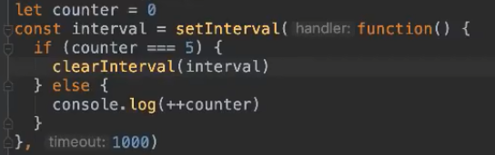Здесь происходит что-то непонятное. Метод сетинтервал передаётся переменной интервал, чтобы потом другим методом очистить её изнутри анонимной функции. Функция и задержка передаются сетинтервалу аргументами. Функция очистит переменную, если внешний каунтер достигает 5, иначе инкрементирует и выводит его. Иными словами, это что-то вроде цикла с неявным условием.
const arrow1 = x1 => console.log('Hello - ', x1)
Стрелочная функция, после знака = идут параметры функции, более одной (или менее) помещаются в скобки, затем стрелка и некая функция, при нескольких стейтментах помещается в фигурные скобки. Если операция одна, даже return писать необязательно. Параметры по умолчанию, использование со скобками, (x1=2, x2=x1+1), используются при вызове функции без аргументов.
const pow1 = (x1=2) => x1 ** 2
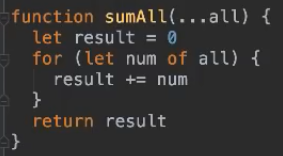Троеточие (рест) позволяет вызвать функцию с любым количеством аргументов и обратить их в массив. Здесь, если вызывать эту функцию с агрументами 10 11 12, результат будет 33. Непонятен принцип работы счётчика в цикле, если он обычно считал по индексам 0 1 2, то тут принимает значения сразу из массива.
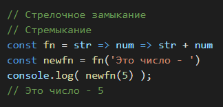Замыкания - в одной функции на возврат выдавать другую функцию. Позже описать подробнее. При вызове первой функции с некоторыми параметрами возвращается другая функция, но параметры первой функции будут замкнуты в новой. Или можно просто задать объекты в скоупе первой функции, и в возвращенных объектах они будут замкнуты. Можно вернуть объект, содержащий несколько методов функции, и он будет иметь весь набор изначальной функции.
Лямбда, или вроде стрелочно анонимная. Ищет из массива (people) с объектами (name: , budget: ) нужный объект, методом финд. Метод принимает функцию параметром, автоматически передавая в её параметр свои объекты циклически. Сложно понять сразу. Ещё раз. Метод финд работает с массивом как цикл, вызываясь с объектами по порядку, и эти объекты можно передать параметрами для анонимной функции, просто включающей булевское условие. Немного иначе работает findIndex метод, но концепт такой же.
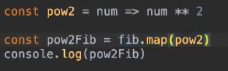
Для существующего массива fib с числами метод мап циклически проводит стрелочную функцию, возвращая новый массив.
IIFE имедиат инвоукд фанкшн експрешн. Сложно, если вар переменная не даёт циклу нормально вкручивать итератор в что-то там, то надо сделать дважды круглые скобки и в первой переделать переменную. И во второй что-то.
Глава 6. Объекты методы прототипы.
const person = {name: 'sema', age: 30, fun1: function() {} } Если вызвать консолью, получим список полей и значений. Обращение к полям и методам через точку. console.log(person.name). Ещё также вызов через person['name'] или person[x], без точки. Реализует динамический доступ по ключу, имеющему вид значения строковой переменной x = 'name'. Как и массиву, объекту можно добавить новые поля. Метод можно записывать сокращённо, без двоеточия и фанкшн(). Тогда скобки надо перенести к имени нового метода. Ключи объекта бывают комплексными, то бишь строковыми, 'com key': 'com value'. Что именно это даёт, кроме использования пробела, пока не ясно. Также ключи в квадратных скобках, будут сформированы операциями внутри [2 + 2]: '4'. Этими же скобками подставляются внешние переменные для создания поля. Ими же можно калькулировать значения полей. Влить в объект внешнюю переменную можно, просто упомянув её. City = City было ранее, теперь можно просто написать City,.
Есть базовые объекты языка, Number, Math, Array, String, Object и прочие разные.
Возможно вызывать два метода в одной конструкции. Чейнинг. name.toUpperCase().charAt(0), этот метод вернёт значение первого символа строки нейм после приведения к верхнему регистру.
Ключевое слово delete позволяет удалить ключ целиком из объекта. delete person['name'].
Деструктуризация. const {name, age: age1 = 10} = person. Этот алгоритм здесь создаёт две переменые со значениями полей объекта персон, имена переменых можно оставить как у ключей, или указать новые после двоеточия, также задать значение по умолчанию, если например в объекте не окажется нужного поля или будет undefined. Использование рест в объекте создаст новый объект. Если после создания клона рестом повторить содержащееся поле с новым значением, оно применится к этому объекту. Добавлять новые поля тоже можно.
Деструктуризация работает для массивов тоже. const [a,b] = arr заберёт два первых элемента арр, в переменные а б. Пропуск элементов просто вписать лишнюю запятую. const [a,,,d]
for in цикл работает для объектов, for (let x in person) {} здесь х будет принимать строковые названия ключей и итерироваться. Опасен затрагиванием родительских полей объекта, поэтому нуждается в добавлении условия через метод hasOwnProperty(x), вероятно дающего истину, пока ключ не попадает на ключи прототипа.
const x = Object.keys(person) возвращает массив с ключами объекта персон.
И совсем не просто. Контекст, принадлежность this к содержащему его объекту. Контекст переопределяется при создании функции, даже анонимной, но не стрелочной. Использовать стрелочную вместе с контекстами, или создавать переменную const abvgd = this или использовать для внешнего контейнера метод привязки .bind(this).
Прототипы. Через ключевое слово __proto__. До ес6 они получались через Object.getPrototypeOf(). Нужны для организации наследования. Поля и методы передаются от прототипа к объекту. Для расширения прототипа родительского объекта нужно обращаться к нему через .prototype, а __proto__ для инстансов.
Object.create(obj) возвращает новый объект с прототипом, образованным из obj.
Ещё подробнее. Этот метод можно использовать для формирования новых объектов расширенным функционалом. Он принимает два параметра в виде объектов, первый определяет прототип, второй формирует поля с расширенными возможностями, записанными вложенным объектом. Value как поле объекта содержит значение для внешнего поля, а другие поля называются проперти дескрипторами, и позволяют задать итерируемость, перезапись и прочее.
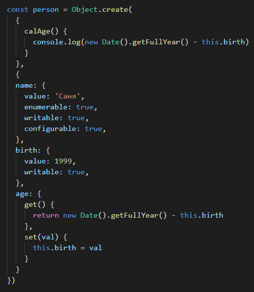Енум подсвечивает поля доступными для обнаружения циклами. Вритабл позволяет переписывать, без него даже сеттер не сработает. Конфа позволит удалять. Адж включил два метода, первый реализует функционал при доступе к аджу, второй реализует функционал при присваивании значения аджу в его параметр. Метод в первой части конструктора помещается в прототип. Является итерируемым.
Object.assign({}) возвращает объекты слитые в одно. Если первый указан пустой, то он будет использован, иначе существующий первый будет изменён этой работой.
Object.values(obj) противопоставлен кейс. Он возвращает массив значений, а не полей.
Object.entries(obj) делает двумерный массив. Строки таблицы содержат пару поле-значение.
Глава 7. Строки и кавычки.
Вроде между одинарными и двойными нет разницы в джс. Но вот обратные или `апострофы` -- литералы, они там где буква Ё. Дают расширенный функционал. Передают полную позицию всех пробелов и переводов, и ещё являют доступ к подстановкам. Подстановки делаются так - ${func1}. Можно через них выводить строковые и числовые переменные, вызывать функции, даже выполнять некоторые простейшие конструкции вроде тернарного оператора.
Строку с новыми апострофами и подстановками можно использовать при вызове функции, вместо списка атрибутов. func1`name ${name1}, age ${age1}, hello!`. Такая функция примет три параметра - массив из трёх строк, разделённый двумя другими параметрами, имя и возраст.
Добавление знака плюс перед строкой производит преобразование в интежер.
Глава 8. Массивы.
Просто немного методов и алгоритмов.
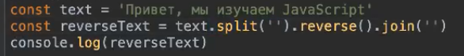Здесь создаётся строка, затем для неё производится обращение в массив, элементы определяются разделителем в скобках, затем массив обращается наоборот, затем элементы складываются через символ, указанный в скобках. Для последнего, по умолчанию без скобок склеивание произойдёт с символами запятыми.
Методы для массивов. push добавляет новый элемент в конец. unshift добавляет в начало. shift удаляет первый элемент, возвращает его тут же. pop соответственно с последним. reverse переворачивает наоборот местами. undexOf находит позицию элемента. includes булевский. map метод возвращает массив, так же циклически произведя работу с лямбда функцией, изменяющей его, изначальный массив не меняется. Метод filter циклично по условию возвращает массив с элементами, подходящими булевски этому условию.
array1.forEach( (x) => { console.log('key:' x) } ) метод производит цикл по значениям масива.
Массив не типизирован, может хранить разные типы элементов.
Массив является вычисляемым типом, то бишь не примитивом, и при a = b обе переменные ловят ссылку на один массив. a = b.concat() создаёт клон. При сравнивании a === b в первом случае истина, во втором случае ложь.
Глава 9. Асинхронность.
Разбор механики асинхронности.
const to1 = setTimeout( {}, 1000 ) эта функция вызывает другую функцию через указанное время.
При этом выполнение кода не тормозится на этом моменте. Есть возможность отменить выполнение, или запустить несколько параллельных процессов.
clearTimeout(to1)
Нагляднее с процессами можно наблюдать setInterval(), весьма схожа с таймаутом, но работает постоянно. Клинсится через clearInterval().
Промисы, асинк, авейт, трай кетч. Листерены. Аяксы.
Промис обычная асинхронная функция, но с доступными несколькими расширенными методами. Можно создавать в переменные new Promise или возвращать из других функций. К ним применяется .then, .catch и .finally, которые выполняют колбек. Ещё есть PromiseAll и какой-то другой, которые принимают группу промисов и отчитываются по моменту завершения их всех или первого из них.
Асинк евейт. Асинк трансформирует функцию, позволяя образовывать внутри неё промисы через евейт. Также производится задержка выполнения, и возврат вероятного значения. Данная функция тоже работает как промис и имеет доступ к .then etc.
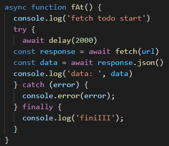Для объекта с нодой или ещё может чего, можно призвать .addEventListener(). Он принимает два праметра, строковое значение события, например click, и функцию, которая будет исполняться. В параметрах функции можно ввести евент, и изучить его в консоле. ( 'click', (event) => {console.log(event)} ). В теле функции можно добавить event.preventDefault(), который отменит прочие стандартные реакции, кроме заданных далее.
Некая общая механика всей асинхры. Алгоритм выполняет действия по порядку, но асинхронные функции выбрасываются во внешние модули, например браузерные, и там циклически или как либо ещё ожидают своего часа. При наступлении коего отправляется команда в промежуточный модуль, а он уже встраивает результаты в изначальный порядок. Названия этих трёх модулей уточнить. Колстек, Веб-апи, колбек очередь. Пример про нуль-таймаут, когда он выполняется после, а не до.
Колстек - поток выполнения основного процесса. Асинхронные функции переносятся в сторонние апи. Сторонние апи меряют время и напрявляют готовое в колюек кью. Оный уже помещает функцию в очередь в колстек.
Глава 10. В доме, события.
Касательно веб разработки, жс плотно основан на взаимодействии со страницей, нежели на сложных вычислениях. DOM - документ объект модель. То бишь строение документа.
Один, из многих вероятно вариантов - получение адреса ноды, тега, и перезапись его объекта. Название обычно начинают с $.
const $teg1 = document.getElementById('id_1')
$teg1.textContent = 'changed'
$teg1.style.color = 'red'
querrySelector тоже возвращает ноду, первую. Есть вариант для всех нод, обращённых в массив.
teg1.onclick = () => {} событие по клику на этот нод.
teg1.addEventListener('click', (event) => { примерно то же, реакция на
событие
event.preventDefault() эта строка отменяет иные прежние реакции
conssole.log('mouseclicking', event)
})
Глава 11. Собеседование.
По учебному курсу владленки минина, есть ряд вопросов, которые могут быть озвучены на собеседовании. Дабы их помнить, кратко занесу сюда.
Сет таймаут ноль, по асинхронности.
Декларейшн и експрешен функции.
Интерпретатор и хойстинг. Объявленные функции доступны для вызова ранее записи объявления. Переменные через var ранее будут в undefined. Константы или let-вары при вызове до объявления дадут ошибку. Функцию можно объявлять с переменными лет, до объявления переменных лет, при условии что вызов функции будет после.
Цикл лет ин, опасность в том, что он прыгает в прототип.
Разница между нул и андефайд. Андефайд относится к необъявленным переменным или без типа. Нул для переменных существующих и типовых.
'0' == false, какой результат? Строка не пустая, но может произойти её преобразование.
Переменные указатели, то бишь ссылки. Два одинаковых массива, созданных отдельно, не будут равны при ar1 === ar2.
Скоуп. Просто термин. Видимость переменных вглубь вложенности, но не наружу.
Замыкания клоузерс.
IIFE. Функции с быстрым вызовом.
Контекст.
Асинхронность.
Расширение глобальных объектов через прототип, и при вызове с дочерним объектом этот объект для метода с function будет передан как this. При расширении со стрелочной функцией контекст теряется, разобраться.
Отличия куков от локал сториджа. Локал больше по объёму, около 5мб, и он не портируется по сетям и интернетам, а предназначается для работы локально.
Глава 12. Сложное или новое.
Рест как параметр функции. Принимает массивом все аргументы при вызове, идущие с его позиции. func1(a,b, ...arr) при вызове с десятью аргументами превратит в массив крайние восемь. Может использоваться при деструктуризации объекта, создав объект.
Спред рабоатает наборот. ...arr развернёт массив в набор значений. Например метод Math.maix(x,y,z) вероятно сам работает на ресте, поэтому ему можно передать разобранный спредом массив. Ещё разобранный массив можно встроить в другие массивы. arr2 = [1,2, ...arr]
Деструктуризация. Работает для изъятия значний из массивов или объектов. const {a,b} = obj. const [a,,b] = arr. Вставка запятых между позволяет проматывать ненужное. Значения по умолчанию. Для объектов замена имени ключа.
Модули, импорт экспорт.
const symb1 = Symbol('sym value') Символы характеризуются уникальностью чего-то там, то бишь если создать два одинаковых, или сравнивать с внешним значением, данное сравнивание всегда даёт ложь. Ещё маскирует поле, заданное символом, в цикле лет ин.
Итераторы. Из спец символов, применяются как методы к объекту, и при вызове уже этого объекта с методом .next возвращается объект следующий с полями value и done. Или же это метод-инкремент, встроенный в массивы, строки, и прочее итерируемое, для удобного пользования.
Генераторы. Функции, которые содержат симбол-итератор.
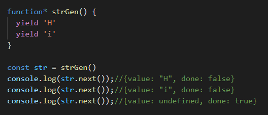Map. Вроде объекта или массива, с расширенным функционалом. Для объектов класса карта доступны методы киис, вельюс, ентрис. Первые два считаются итераторами. Создаётся через массивы. Или может приводиться к этому через метод объекта .entries. Одна из особенностей - ключом может быть разная сущность, и инстансы объектов, и даже значение NaN, но повторяться ключи не могут. Добавление нового изменит значение в старом.
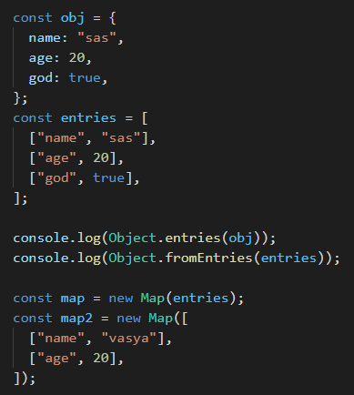Методы для карт инстансов. .set() принимает два параметра, поле и значение. .get() принимает ключ, отдаёт значение. .delete() принимает ключ, отдаёт булевский отчёт об успешности. .has() принмает ключ, отдаёт булевский отчёт о наличии-отсутствии. .size отдаёт количество ключей. .clear() обнуляет. .forEach() как для массива, принимает колбек с параметрами значение-ключ-массив.
map.entries() приводит к виду двумерного массива, аналогично как для объектов. Хотя при вызове для циклов он сам преобразовывается, и такая запись необязательна. map.values() возвращает массив значений. map.keys(). Развернуть карты можно ещё через спред -- (...map1). Array.from(map) аналогично.
Set. Работает примерно как мап, только не имеет вторую шкалу. То бишь содержит ряд значений, но они так же итерируются через методы мепа. Ряд проще сравнивать с ключами, потому что сет не позволяет их дублировать, и самостоятельно затирает повторения. методы .add().
WeakMap создаётся так же, ключами может иметь только объекты, методы имеет только гет сет делит хез, и он нужен для того, чтобы автоматически удалять ключи при удалении объектов.
WeakSet создаётся так же, ключами может иметь только объекты, и он нужен для того, чтобы автоматически удалять ключи при удалении объектов. В осовном работает с методом .has().
Reflect. Добавляет функционал в создание объектов класса. При создании можно указывать класс прототипа. Вызывать методы с контекстами других объектов. Получать список своих ключей. Блокировать расширение объекта или проверять возможность сего.
local.Storage. Запись в хранилище браузера. Между вкладками.
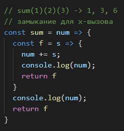Функция отрисовывает введённый параметр, затем замыкает его и возвращает новую функцию, которая принимает новый параметр, переписывает замкнутый суммой, отрисовывает полученную сумму. Сложная концепция, но забавная.
Глава 13. Классы.
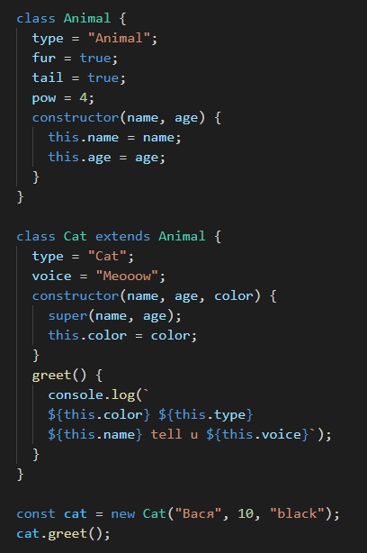Класс создаётся примерно так же, как объект. Перечисляются параметры, которые станут набором полей и значений инстансов.
Конструктор, вероятно нужен чтобы создавать инстансы со значениями, не внесёнными изначально. При вызове конструктора с перекрытием родительских полей конструктора, надо эти поля передавать внутри конструктора родительскому конструктору через super, иначе что? Какая-то ошибка.
Super производит обращение к родительскому классу. Например при переопределении метода можно дописать внутри super.meth1() который вызовет сразу meth1 из родительского класса.
Extends. Класс, наследующий, дочерний, от родительского, создаётся с extends.
Геттеры и сеттеры. Создаются ключевым словом get и set, далее описание как некого метода с любым названием, и внесение логики. Геттер при обращении по имени метода без скобок произведёт вывод логики, а сеттер вызывается с присваиванием значения какому либо полю.
Static. Поля и методы, сделанные им, могут вызываться без создания инстанса.
При создании инстансов дочерних классов, можно в конструктор кидать объект заготовку. Его же посылать в супер. Лишнее отсеется, а в частностях обращаться к полям эскалированного объекта.
Глава 14. Прокси.
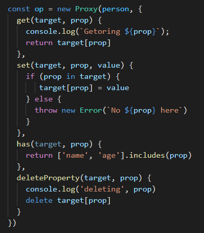Создаётся проксированный объект из обычного объекта. Через new Proxy(), который принимает таргет и хендлеры - ловушки. Переписываются базовые алгоритмы. Например дополнить геттеры сеттеры логами.
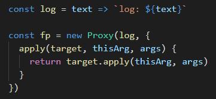Проксированным функциям можно перехватывать их вызов, например.
Для классов можно перехватывать construct.
Глава 15. Запросы в сервер.
Глава 16.
В начало документа.